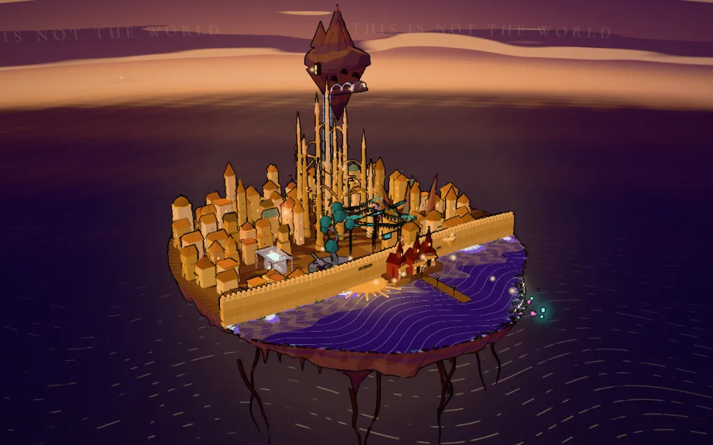

Elysicester

Elysicester, held still
This browser can't draw the city as it moves (it has no WebGL to lend), so Elysicester arrives as a still: one dusk, drawn once. Its reading points are listed here, and every one of them opens.

This browser can't draw the city as it moves (it has no WebGL to lend), so Elysicester arrives as a still: one dusk, drawn once. Its reading points are listed here, and every one of them opens.